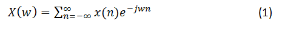
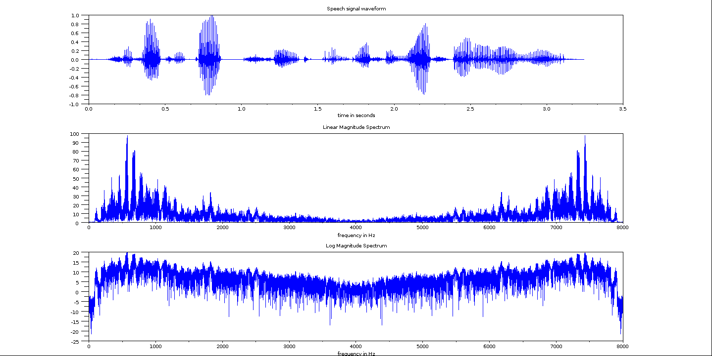
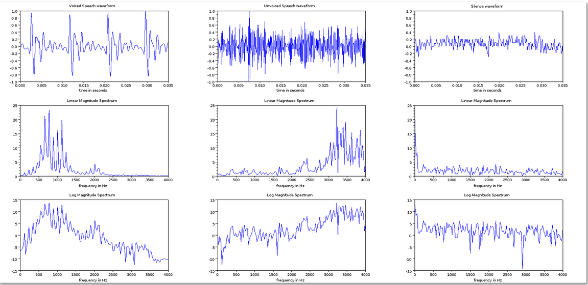
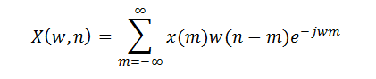
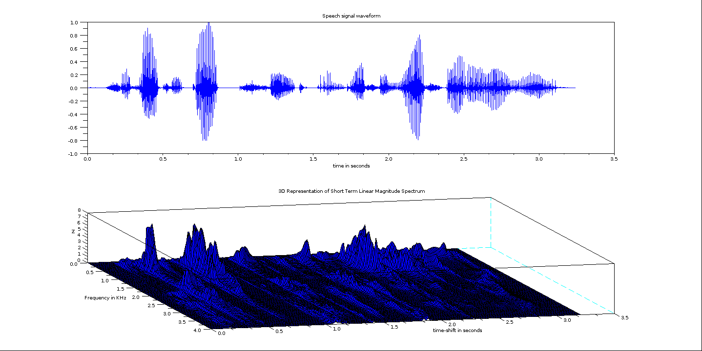
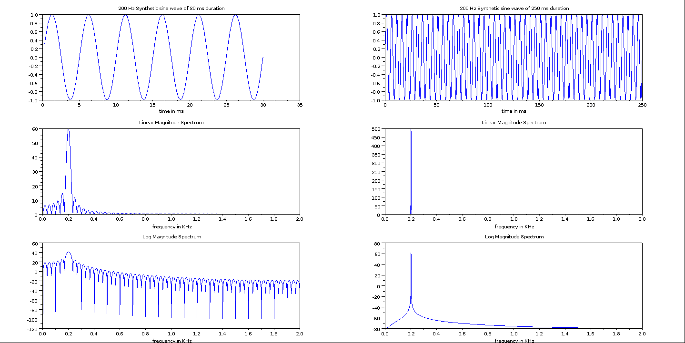
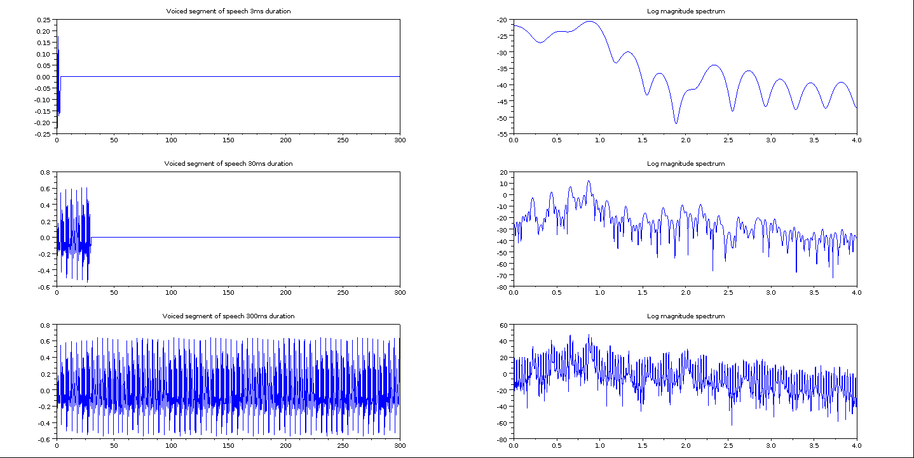

Shakshat Virtual Lab 
INDIAN INSTITUTE OF TECHNOLOGY GUWAHATI
Introduction
The short term time domain analysis is useful for computing the time domain features at the gross level like energy, zero crossing rate and autocorrelation. The different frequency or spectral components that are present in the speech signal are not directly apparent in the time domain. Hence we need to go for frequency domain representation using Fourier representation. The conventional Fourier representation studied in the first courseof signal processing is inadequate to provide information about the time varying nature of spectral information present in speech. Hence the need for short term version of Fourier transform, termed more commonly as Short term Fourier Transform (STFT) .
DTFT
From digital signal processing , to obtain the frequency domain representation we use discrete time Fourier transform (DTFT). If X(w) is the discrete time Fourier Transform(DTFT) of x(n),a discrete time signal, then its DTFT is given by

As given in equn (1), X(w) is continuous function of frequency and hence cannot be computed on a digital signal processor or machine. To make it possible discrete version of the DTFT termed as discrete Fourier transform (DFT) is defined where DFT is obtained by uniformly sampling X(w) is given by.

where Wk=2Πk , k=0,1,....(N-1), where 'N' is the number of samples of X(w). The value of 'N' is chosen such that, the reconstructed sequence x(n) in the time domain is free from aliasing. For this the condition is 'N' should be greater than or equal to the length of x(n). Thus we have a tool called D.F.T for computing DTFT on a digital signal processor or machine.
Limitation of DTFT
When speech signal is recorded on a digital machine, then it leads to the discrete time sequene s(n) . Now we can compute its DTFT, S(W) using DFT and can be plotted as shown in Fig.1. The figure shows the waveform (time domain representation), linear magnitude and log magnitude spectra. In case of speech the large magnitude frequency components dominate in the linear magnitude spectrum to give a false picture of small magnitude frequency components. To reduce the dynamic range, the logarithmic version of the magnitude spectrum is taken. In case of log magnitude spectrum both large and small magnitude frequency components are visible. Hence in all future plots, only log magnitude spectrum is used.

Fig.1 : Speech signal and its linear and log magnitude spectra
The magnitude spectrum shown in Fig. 1 is for the entire speech signal and gives us only gross information of the frequency components present in the speech signal. However, this spectrum does not tell us when a particular frequency component is present i.e the timing information is completely lost. Speech is a non-stationery signal i.e the frequency components change with time. To be more specific, a particular set of frequency components is present in one interval and another set of frequency components in some other interval and so on. Therefore for speech we need a representation that will give time varying spectral information.
To get a feel about the significance of such a time-varying spectral information, Fig.2 shows a segment of voiced speech, unvoiced speech and silence regions and their spectra. The nature of spectra is different for all these three segments. Speech is made of time-varying sequence of such spectra. Thus one spectrum for the entire signal will not help us to understand the different frequency components present in the speech signal. Finally, it is also not the correct way of computing the spectrum of non-stationery signal.
Need for STFT

Fig.2 : Segmentation of voiced ,uncoiced and silence regions of speech along with linear and log magnitude spectra
STFT Relation
TTo take care of time varying spectral information, the short term processing approach is employed. In short term processing, speech is processed is blocks of 10-30 ms with a shift of 10 ms. For instance, using a block size of 20 ms, the DTFT is computed using DFT for that block. Their process is repeated for all the blocks of speech signal and all the spectra computed are stacked together as a function of time and frequency to observe the time varying spectra. To accommodate the time varying nature of this spectra, the DTFT equation is defined as given below

where W(n) is the window function for short term processing. Now the spectral amplitude and phase are function of both frequency and time where as it was only function of frequency in the earlier case of DTFT. x(m).w(n-m)represents the window segment around the time instant 'n'. Hence X(w,n) at 'n' represents the spectrum of the speech segment present around it. When we shift 'n ', then correspondent X(w,n) also changes. Thus giving visualization of the time varying spectra of speech. Since such a time-spectral is computed using short term processes, X(w,n) is termed as Short Term Fourier Transform (STFT).
STFT of speech

Fig.3
The STFT of speech signal is given in fig 3. STFT magnitude spectra is a three dimensional (3D) plot of spectral amplitude versus time and frequency. By fixing time 'n' at a particular value say n=n0 and observing STFT gives spectrum of that segment of speech. Alternatively by fixing the frequency 'w' at a particular value say w=w0, and then observing STFT gives time varying nature of that particular frequency component. As can be observed, the spectral amplitude associated with a frequency component varies as a function of time. This is what needs to be observed in case of time varying spectra available in speech and hence the usefulness of STFT.
Concept of True vs Convolved spectra
The STFT representation of speech comes with a price. That is STFT need not accurately represent the true spectral information of speech. To understand this we need to get hold on to the concept of true Vs convolved spectra. Consider a sinewave of 500 HZ of 10 sec duration. Since it is a single tone stationery signal, we can say from our signal processing knowledge that its spectrum will have an impulse only at 500 HZ. This is termed as the true spectrum of the sine wave in the context of STFT representation.
Alternatively, we can consider a segment of sinewave, say 30 ms somewhere along its length by windowing and compute its spectrum. In this case, the resulting spectrum is not an impulse at 500 HZ, but a sinc function centered around 500 HZ . This is because, by multipliying it with a rectangular window in the time domain, leads to the convolution of their spectra in the frequency domain. The true spectrum of sine wave is impulse at 500 HZ and that of rectangular window is sinc function. As a result, the convolved spectrum is a sinc function around 500 HZ . If we do not have the knowledge about the true spectrum of sine wave, then we would be easily carried away by the magnitude spectrum of sinc function around 500 HZ and interpret all non-zero amplitudes as the frequency components as the spectral components of the 500 HZ sine wave which is wrong

Fig.4 : Sine wave and its true and convolved spectra
TThis is the effect of short term processing. Fig.4 shows the plot of true Vs convolved spectra of sine wave. For the case of sinewave, we do not need STFT, because it is stationary. However this synthetic example is used to illustrate the concept of true and convolved spectra. This is because, it do not have access to the true spectrum of speech. If we compute the spectrum by considering the whole speech signal, then it results in a spectrum as given in Fig.1 and do not convey any information related to speech. If we have to obtain same useful spectral representation of speech, then we need to segment it by windowing. Once we window it, then we get only convolved spectrum, not the true spectrum. Thus we have to be careful in interpreting the spectral information available in the STFT of speech. What we are observing is only the convolved spectra.
Window size for short term spectral analysis:
Of course we can minimize this effect by using a proper size of window. If the window duration is of 10-30 ms, then the spectral information may be affected to a minimum extent. Alternatively, if the window size is too less, then the window effect may be too severe. In yet another case, if the window is too large , say 100 msec, then even though windowing effect is negligable compared to 10-30 ms case, we cannot use such a long window due to the non-stationary nature of speech.
Effect of windowing function on short term spectral analysis:

Fig.5 : Rectangular ,hamming and hanning window & their spectra
In case of short term spectral analysis, we consider speech in segments of 10-30 ms. For a given frame size, the nature of spectral information may be slightly varied depending on the type of window which is essentially a finite duration function used for selecting out a particular segment of speech. However, the nature of window function indeed varies the spectral information. Fig. 5 shows the rectangular, Hamming and Hanning window functions in the time and frequency domains. The width of main lose in the frequency domain is less for rectangular window compared to the other two window function. As a result the resolution offered by the rectangular window function is better. Alternatively, the peak-to-side lobe ratio of rectangular window is significantly poor compared to the other two window functions. This results in relatively more spectral leakage in case of rectangular window which is not desirable. Thus from the resolution point of view, rectangular window is preferable and from spectral leakage point of other two window functions are preferable. The effect of spectral leakage is severe and hence in most of the speech analysis applications, either Hamming or Hanning window function is employed.
Spectral analysis of speech using window function:
Fig. 6 plots the short term log magnitude spectra of a 30 msec voiced speech segment using rectangular, Hamming and Hanning window function. The peaks in the log magnitude spectrum of rectangular window are relatively sharper compared to the other cases. However, the spectrum due to the rectangular window seems to be more noisy compared to the other two window functions. This is because of the high spectral leakage associated with it. Similar observations can be made with respect to the unvoiced segment of speech shown in Fig.7. Since spectral leakage is severe in case of rectangular window, either Hamming or Hanning window is preferred for the short term spectral analysis of speech.

Fig. 6 : Voiced segment of speech and its log magnitude spectra using rectangular,hamming and hanning window functions

Fig.7 : Unvoiced segments of speech and its log magnitude spectra using rectangular,hamming anf hanning window functions
Effect of window size on short term spectral analysis of speech:
Fig. 8 shows a short term log magnitude spectra of voiced segment using a frame size of 3 ms, 30 ms and 300 ms. In case of 30 ms, the log magnitude spectrum contains both the vocal tract information as envelope and the excitation source information in terms of pitch and its harmonics. In case of 3 ms, since the window size is less than a pitch period, the log magnitude spectrum has only smooth envelope representing vocal tract information. However, due very short frame size, the vocal tract information is affected from poor spectral resolution. Finally, in the 300 ms case, the spectrum suffers from timing resolution due to its large size. Similar observation can be made for unvoiced segmentation of speech also.

Fig.8 : voiced segment spectra using 3,30 and 300 msec segments